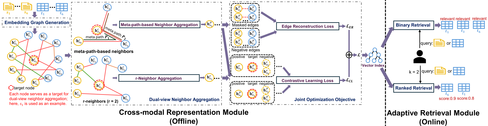
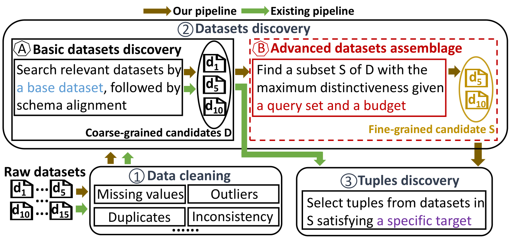
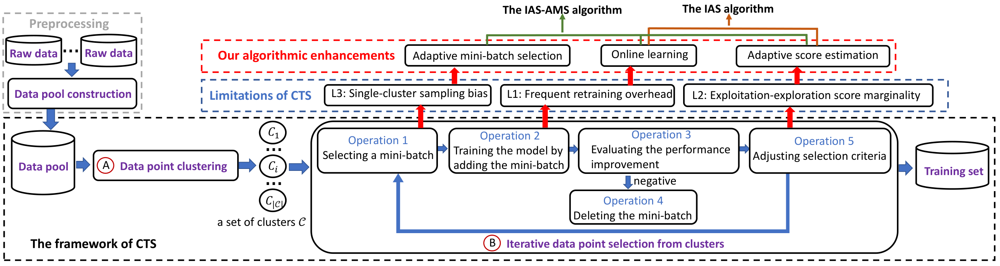

We released a new survey, A Survey of LLM-Powered Question Answering Through the Lens of Query Processing, together with a curated GitHub repository. The survey introduces a pipeline-oriented taxonomy for LLM-powered QA, organizing recent work into five query-processing stages and highlighting open research gaps for next-generation QA systems. GitHub
About
I obtained my Ph.D. in the School of Computing Technologies from RMIT University in 2025, supervised by Prof. Zhifeng Bao, Prof. J. Shane Culpepper, and Dr. Shixun Huang. My research lies at the intersection of data management, machine learning, and large-scale intelligent systems.
My work focuses on learning-enhanced, target-oriented data ecosystems that improve both AI performance and data system scalability. I develop data-centric frameworks and algorithms for intelligent data orchestration across multi-modal data lakes.
Broadly, I am interested in unifying database principles with modern AI techniques: using AI to make data management systems more adaptive, and using data management foundations to improve the reliability, efficiency, and transparency of AI systems.
Education
- 2021 - 2025 Ph.D. in Computing Technologies RMIT University
- 2017 - 2020 Master in Computer Science Sichuan University
- 2013 - 2017 Bachelor in Computer Science Sichuan University
Recent News
Publications
Conference
AgenticScholar: Agentic Data Management with Pipeline Orchestration for Scholarly Corpora
Hai Lan, Tingting Wang, Zhifeng Bao, Guoliang Li, Daomin Ji, Ge Lee, Feng Luo, Zi Huang, Hailang Qiu, Gang Hua.
SIGMOD 2026.
Unified Data Discovery across Query Modalities and User Intents
Tingting Wang, Shixun Huang, Zhifeng Bao, J. Shane Culpepper, Shazia Sadiq, Volkan Dedeoglu, Reza Arablouei.
Under review at NIPS 2026.
Distinctiveness Maximization in Datasets Assemblage
Tingting Wang, Shixun Huang, Zhifeng Bao, J. Shane Culpepper, Volkan Dedeoglu, Reza Arablouei.
WWW 2025.
Optimizing Data Acquisition to Enhance Machine Learning Performance
Tingting Wang, Shixun Huang, Zhifeng Bao, J. Shane Culpepper, Volkan Dedeoglu, Reza Arablouei.
VLDB 2024.
Representative Routes Discovery From Massive Trajectories
Tingting Wang, Shixun Huang, Zhifeng Bao, J. Shane Culpepper, Reza Arablouei.
KDD 2022.
ATOM: Construction of Anti-tumor Biomaterial Knowledge Graph by Biomedicine Literature
Tingting Wang, Lei Duan, Chengxin He, Geng Deng, Ruiqi Qin, Yidan Zhang.
BIBM 2019.
Journal
A Survey of LLM-Powered Question Answering Through the Lens of Query Processing
Gang Hua*, Tingting Wang*, Zhifeng Bao, Shazia Sadiq, Qing Xie. *Equal contribution.
Preprints, 2026.
Dynamic Ridesharing with Minimal Regret: Towards an Enhanced Engagement Among Three Stakeholders
Tingting Wang, Hui Luo, Zhifeng Bao, Lei Duan.
IEEE TKDE, 2023.
An Integrative Disease Information Network Approach to Similar Disease Detection
Wuli Xu, Lei Duan, Huiru Zheng, Jesse Li-Ling, Weipeng Jiang, Yidan Zhang, Tingting Wang, Ruiqi Qin.
IEEE/ACM TCBB, 2023.
Efficient mining of concept-hierarchy aware distinguishing sequential patterns
Chengxin He, Lei Duan, Guozhu Dong, Jyrki Nummenmaa, Tingting Wang, Tinghai Pang.
Knowledge-Based Systems, 2022.
Mining Similar Aspects for Gene Similarity Explanation Based on Gene Information Network
Yidan Zhang, Lei Duan, Huiru Zheng, Jesse Li-Ling, Ruiqi Qin, Zihao Chen, Chengxin He, Tingting Wang.
IEEE/ACM TCBB, 2022.
Efficient Mining of Outlying Sequence Patterns for Analyzing Outlierness of Sequence Data
Tingting Wang, Lei Duan, Guozhu Dong, Zhifeng Bao.
ACM TKDD, 2020.
Mining distinguishing customer focus sets from online customer reviews
Lei Duan, Lu Liu, Guozhu Dong, Jyrki Nummenmaa, Tingting Wang, Pan Qin, Hao Yang.
Computing, 2018.
Projects
Target-Driven Data Curation
This topic focuses on discovering, assembling, and acquiring high-quality data from heterogeneous data lakes for target-oriented AI applications.
Dataset Discovery
Unified Data Discovery across Query Modalities and User Intents

Modern data lakes support diverse applications such as question answering and fact verification, yet existing data discovery methods are typically designed for a single query modality or specific user intent. This work studies how to uniformly retrieve relevant tables given either natural language statements or tables as queries, without relying on intent-specific modeling. To this end, a unified cross-modal graph learning framework is introduced to learn shared representations for queries and tables by leveraging heterogeneous contextual signals in data lakes under limited supervision, enabling flexible and scalable relevance assessment.
Dataset Assemblage
Distinctiveness Maximization in Datasets Assemblage

Modern data lakes offer abundant datasets, yet existing discovery methods typically evaluate datasets individually, leading to redundant acquisitions and inefficient budget usage. This work studies how to assemble a set of datasets under a budget to maximize the amount of distinct information with respect to a query set. We formulate this as a distinctiveness maximization problem and develop an efficient ML-based method to estimate dataset distinctiveness, enabling scalable greedy selection without expensive exact computation.
Data Point Selection
Optimizing Data Acquisition to Enhance Machine Learning Performance

Modern machine learning models depend heavily on training data quality, yet simply collecting more data does not guarantee better performance. This work studies how to select high-quality labeled data from large, heterogeneous data pools to improve a target ML model. Since validating data value typically requires repeated retraining during selection, which is computationally expensive, we develop adaptive, model-agnostic algorithms that combine online learning with dynamic exploration-exploitation scoring to efficiently estimate data utility without full retraining.
Professional Service
Area Chair
KDD 2026
Senior Program Committee Member
PAKDD 2026
Program Committee Member
WWW 2026; CIKM 2023, 2024, 2025
Session Chair
WWW 2025; ADC 2023
Awards
2022 - 2024CSIRO Data61 PhD Scholarship
2018 - 2020Second-class Scholarship of SCU
2017Outstanding Graduate Award of SCU
2016National Scholarship of China
2016First-class Scholarship of SCU
2016Meritorious Winner of MCM/ICM
2014 - 2016Outstanding Student Award of SCU